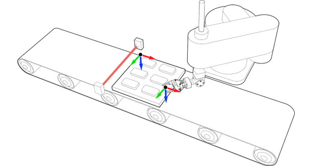

Robotics Command
SYNC_TO_OBJECT_FRAME(control, time[, object frame, GTA])
It is possible to synchronise the robot TCP with a moving object or with another machine or robot. This means the robot TCP will move or rotate in the same directions than the synchronised object and absolute movements on top of it.
There are two types of synchronisations:
1. Object frame synchronisation
2. GTA synchronisation
For object frame synchronisation, an object frame must be attached to at least an axis first before the robot can synchronise with.
As synchronisation and attachment process do not get loaded into the move buffer, they are not cancelled by CANCEL or RAPIDSTOP commands. A desynchronisation or detachment process must be performed for this purpose. When a software or hardware limit is reached, synchronisation and attachment are immediately stopped without deceleration.
|
Parameter |
Data type |
Description |
|
control |
Integer |
1 = Start synchronisation 4 = Stop synchronisation. 10 = Resynchronisation to another attached object frame |
|
time |
Integer |
Time to complete the synchronisation in milliseconds. |
|
(optional) object frame |
Integer/String |
Object frame already attached. Value = index or name of the object frame. Not needed for control 4 (Stop synchronisation). |
|
(optional) GTA |
Integer/String |
GTA related to the object frame synchronised. Value = index or name of GTA, or -1 for no GTA. Not needed for control value 4 (Stop synchronisation). |

After having attached the Object Frame onto the pallet, the robot has to be synchronised with the Object Frame and, in this particular case, placed over a specific object (GTA related to the Object Frame “pallet” previously taught).
SYNC_TO_OBJECT_FRAME ( 1 , 1000 , "pallet" , "object_1" )
Stop synchronisation within 250ms.
SYNC_TO_OBJECT_FRAME ( 4 , 250 )